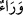

Kurtubî der ki: “Dönmeyi istemek, kâfire mahsus değildir. Yâni kusurlu mü’mine de
şâmildir.”
Baklî’nin Hakâik’ında der ki: “Yüce Allah beyân etmiştir ki, tâatlerin
mertebelerinden düşen kimse mânevî derecelere ulaşamaz. Bidâyet hallerinde
murâkabelerden mahrum olan, nihâyet hallerinde müşâhedelerden ve muâyenelerden
mahcûb olur. Sahte ve bâtıl iddiâların sâhipleri ise ruhlarının bedenlerinden ayrılma
vaktinde zamanlarının tâatlerden gaflet ile geçmemiş olmasını; boş iddiâlarda,
muhâlefetlerde ve makul olmayan işlerde bulunmamış olmayı temennî ederler.
Öyleyse Mevlâ’nın tâatine yönel, kuru iddiâlar ve haller hakkında boş konuşmaktan
sakın. Çünkü bu büyük bir fitnedir. Bu konuda müridlerden niceleri helâk oldu. Kim
muâmelâtı düzeltmeye sığınırsa, bunun bereketi mutlaka onu Rabb’in yakınlığına ve
güven (emn) makamına götürür. Kim de bu yolu terk ederse âtıl kalır, fesâda uğrar,
büyük bir korkuya düşer ve temennînin fayda vermediği zaman temennîde bulunur.
Hâfız der ki:
İş yapmaya bakalım, yoksa mahcûbiyet ortaya çıkarır
Can elbisesini öbür dünyaya çektiğimiz zaman
Hucendî ise şöyle der:
İlim ve takvâ dâvâdan ibârettir, mânâ bir başka şeydir
Mânâ eri olan başkadır, dâvâ meydanı başka bir şeydir
“Hayır!” Bu kelime dönme talebini reddetmekte ve imkansız olduğunu belirtmektedir.
Yâni o asla dünyaya geri döndürülmez. “Onun” ölüm sırasında kesin olarak üzüntünün
kendisini kaplaması sebebiyle “söylediği bu söz” “Rabbim, beni geri gönder;” sözü
“(boş) laftan ibârettir.” Ona icâbet edilip karşılık verilmez.
“Onların önlerinde ise, yeniden dirilecek güne” kıyâmet gününe “kadar (süren) bir
berzah” onlar ile onların geri döndürülmesi arasında engel olan kabir “vardır.”
Böylece onların dünyaya dönme ümidi tamamen kırılmaktadır. O zaman dönüş âhiret
hayatınadır.
“
” kelimesi, birbirinin zıddı olan hem arka hem de ön mânâsınadır. Yâni o
kimsenin önünde, demektir. Burada çoğul siygasının kullanılması, mânâ îtibarıyledir.
Çünkü o kimse onların hepsi hükmündedir. Nitekim “ ” ve ondan sonra gelen lafızların
tekil olması da lafız îtibarıyladır.
et-Te’vîlâtü’n-Necmiyye’de der ki: “Berzah, ölüm ile tekrar diriltilme (ba‘s), yâni
dünya ile âhiret arasında olan zamandır. O, misâlî ruhlar âlemi ile bu unsurî yaratılış
arasında olan berzahtan başkadır.”